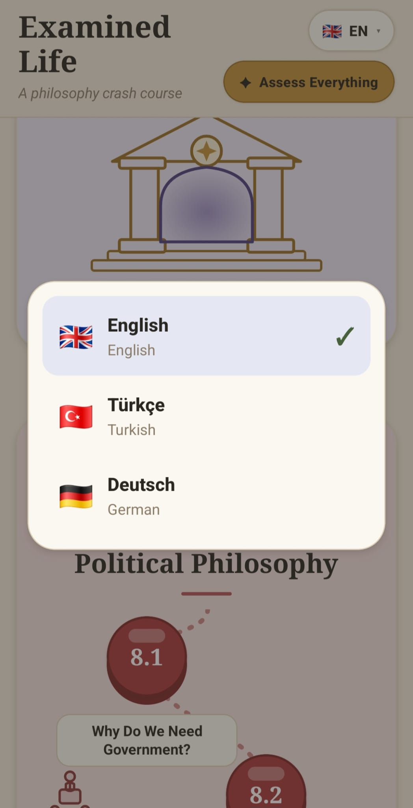
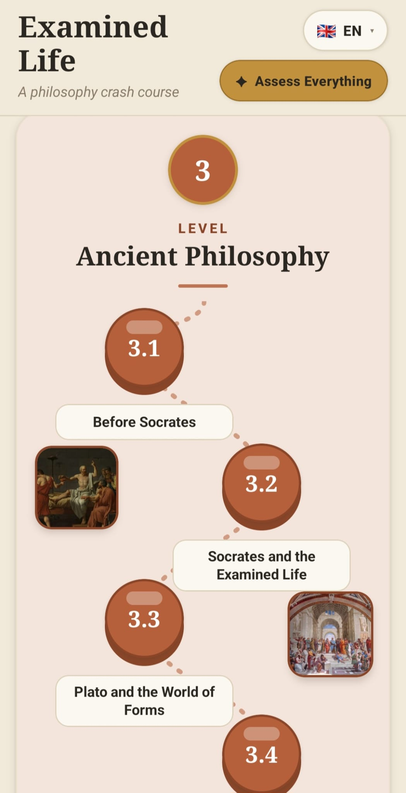
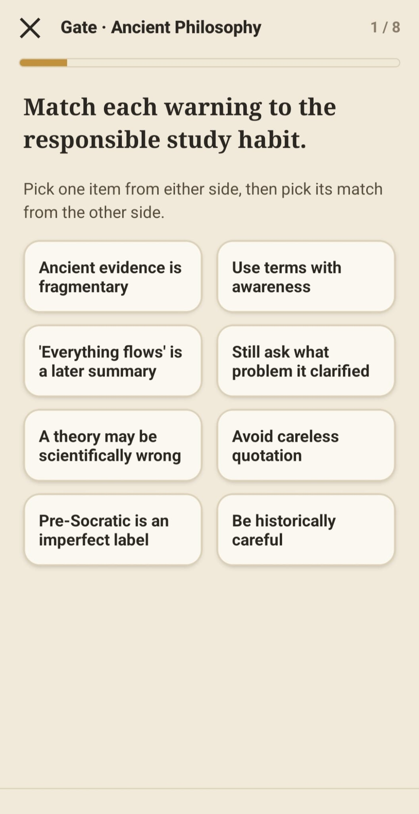
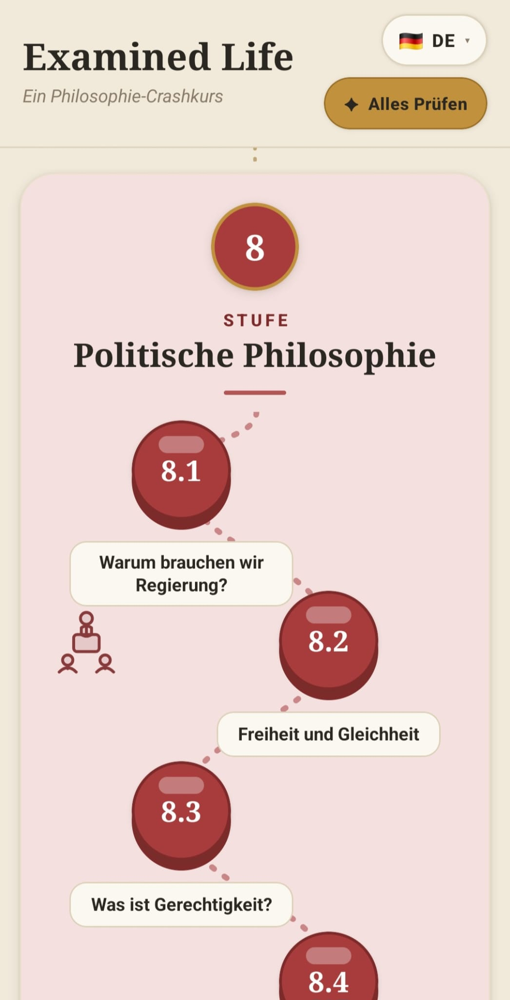
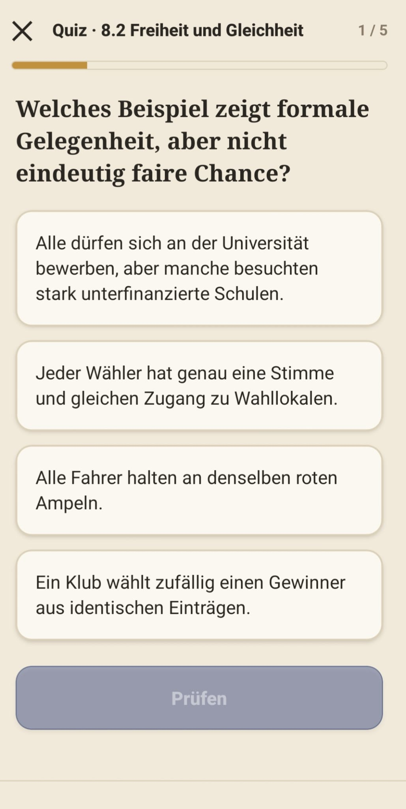
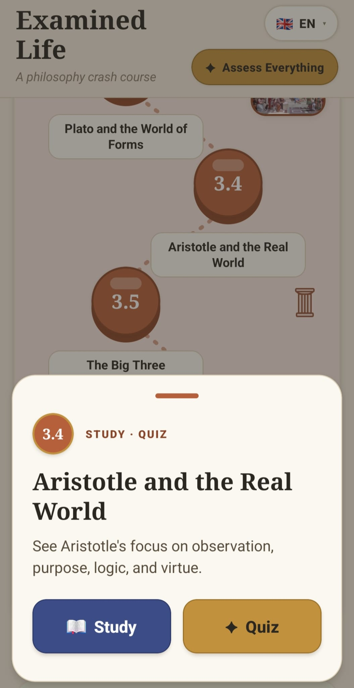
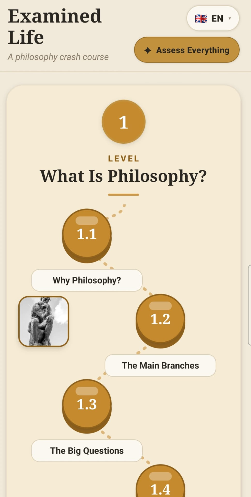
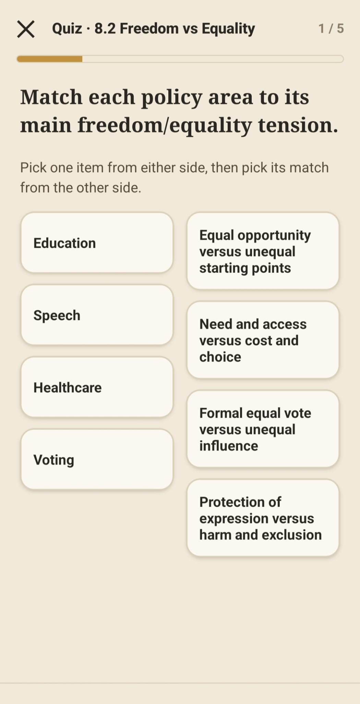
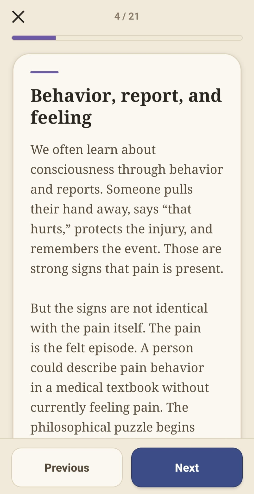
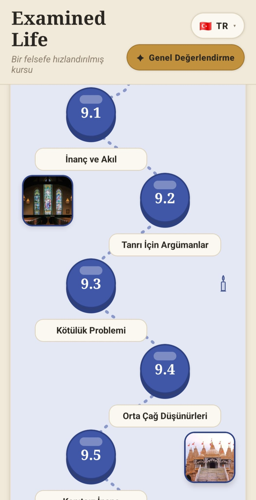

ABProjects
Examined Life
Learn Philosophy
App screenshots
A quick look at the course path, study pages, quizzes, and learning interface.










Downloads
APK SHA-256:
a982a591dbcecf7351579e55e71d0f68ba216259958070754268e5308d728162
How to install on Android
- Tap Download APK.
- Open the downloaded APK file.
- If Android asks, allow installation from your browser or file manager.
- Tap Install.
- Open Examined Life from your app launcher.
Android may show a warning because this is a direct APK download instead of a Google Play install. That is normal for apps installed outside the Play Store.
What is this app?
Examined Life is a philosophy learning app. It is a complete offline course: a collection of study slides, lesson pages, quizzes, and level review gates bundled directly inside the mobile app.
The curriculum starts from simple questions like “What is philosophy?” and then moves through logic, ancient philosophy, ethics, knowledge, reality, politics, religion, meaning, art, modern philosophy, global traditions, technology, work, love, happiness, and the examined life.
You do not need an account to use it. The lessons and quizzes are stored inside the app, so there is no need to upload personal files, send study data, or connect to a server just to read the course.
Implementation
Examined Life is built with React Native, Expo, and TypeScript. The complete course is bundled into the application, allowing the lessons, quizzes, and review gates to work without an account or a continuous internet connection.
- Structured offline course: 14 levels, 83 lessons, and 4,150 quiz questions are organized into study pages, lesson quizzes, and level review gates.
- Multilingual content: the course is available in English, Turkish, and German, with the learning material stored locally inside the app.
- Learning flow: slide-style study pages introduce each topic, while quizzes and review gates reinforce the ideas across an entire level.
- Content architecture: the curriculum progresses from the foundations of philosophy through logic, ethics, knowledge, reality, politics, religion, meaning, art, global traditions, technology, work, relationships, happiness, and the examined life.
A substantial part of the project was also the research and writing process. Each lesson required studying the subject, organizing its central arguments and thinkers, and translating that material into concise lesson pages and question sets. The result is both a mobile application and a complete, structured philosophy course.